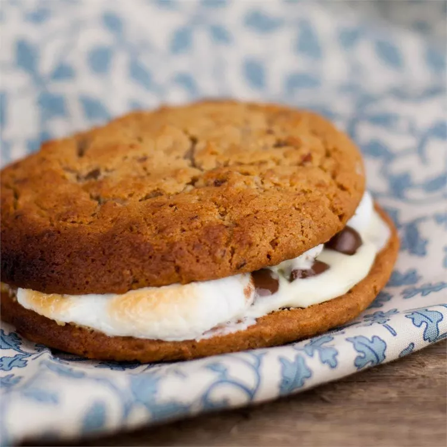

Toasty Campfire Cookies

Description
I created these cookies while camping, they are the tastiest campfire cookies you will ever eat! You can also
make them at home over the stove.
Ingredients
- 5 (1 ounce) squares chopped white chocolate
- 20 oatmeal cookies
- 1 (1.55 ounce) bar milk chocolate candy
- 1 cup miniature marshmallows
Steps
- Melt white chocolate in a double boiler, spread evenly over the bottoms of the cookies.
- Break up the milk chocolate bar into 10 pieces, and place 1 piece onto the white chocolate side of 10
cookies.
- Place the marshmallows on top of the milk chocolate.
- Top with the remaining cookies, creating a chocolate-marshmallow sandwich.
- Toast cookies over a campfire, or stove using tongs until the chocolate and marshmallow has melted, about 3
minutes.